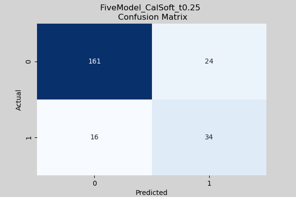
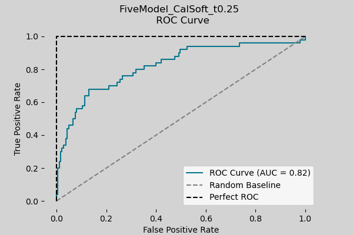

Convoy Risk Prediction Model Analysis
Through extensive testing, the FiveModel_CalSoft_t0.25 ensemble model has proved to be the most capable model in predicting convoys at risk of having at least one ship sunk or zero ships sunk. This section will cover the results of the FiveModel_CalSoft_t0.25 model and will encompass a deep analysis into the model and its behavior. All tests come from the results notebook with underlying analysis code found here.
Model Overview
Final ensemble: FiveModel_CalSoft_t0.25 (calibrated soft-voting), evaluated on a held-out test set (n=235) at decision threshold 0.25.
0.821
0.830
0.680
0.586
0.630
0.522
0.775
Overview: The model exhibits strong class separation (AUC 0.821) with moderate risk recall/precision at the selected threshold.
Confusion Matrix

Classification Report
| Class / Avg | Precision | Recall | F1-Score | Number of Ships |
|---|---|---|---|---|
| Low Risk | 0.910 | 0.870 | 0.890 | 185 |
| At Risk | 0.586 | 0.680 | 0.630 | 50 |
| Macro Avg | 0.748 | 0.775 | 0.760 | 235 |
| Weighted Avg | 0.841 | 0.830 | 0.834 | 235 |
The confusion matrix and classification report further demonstrate the model's ability to separate low risk and high risk convoys. Performance is strong on low risk convoys (class 0 recall = 0.870, precision = 0.910), while high risk detection is moderate (class 1 recall = 0.680, precision = 0.586). In practice, the model correctly captures about 2 out of 3 at risk convoys, while missing about 1 out of 3 (false negative rate = 0.320). This class gap is expected under class imbalance (185 low risk vs 50 at risk cases) and reflects the model's conservative behavior. Optimization efforts focused on reducing false negatives without causing a large increase in false positives. These efforts produced a practical operating point with the FiveModel_CalSoft_t0.25 model at threshold 0.25, where at risk recall remains relatively high while overall accuracy (0.830) and weighted F1 (0.834) stay stable, suggesting improved risk capture without destabilizing overall performance. Given the limited and skewed data, the inability to model certain factors (weather, day/night conditions, U-boat attack strategies, etc.), and the inherent complexity of the problem, these results represent a successful attempt to predict WWII convoy risk status. Overall, the model prioritizes catching at risk convoys, accepts some false alarms, and maintains stable overall performance.
ROC Curve Plot
